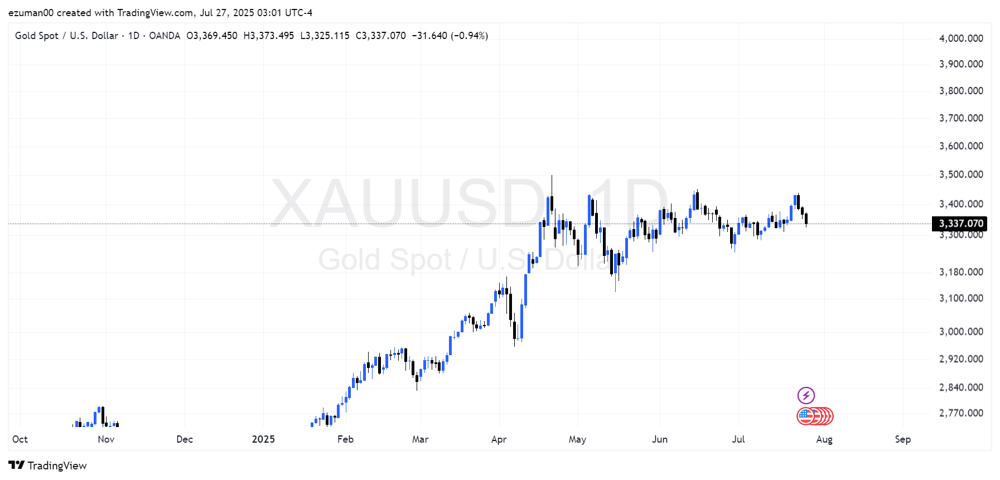

Understanding My Trading Approach
I've been learning and growing in the markets by staying disciplined and keeping an open mind. A good strategy, for me, means having clear principles and being ready to adapt.
My Approach
I take a layered approach, using different strategies for better results:
- Technical Analysis: Utilizing chart patterns, indicators, and price action to identify potential entry and exit points.
- Fundamental Analysis: Keeping abreast of macroeconomic news, company earnings, and industry trends to understand underlying market sentiment.
- Risk Management: Strictly adhering to predefined risk-reward ratios, position sizing, and stop-loss orders to protect capital.
- Trading Psychology: Emphasizing emotional control, patience, and avoiding impulsive decisions.
- Journaling and Review: Consistently logging trades and reviewing performance to identify strengths and weaknesses.
My Step-by-Step Execution Plan
Every trade follows a systematic process to ensure consistency and minimize errors:
- Market Scan: Identify potential trading opportunities across various asset classes (e.g., forex, commodities).
- In-depth Analysis: Conduct both technical and fundamental research on selected instruments.
- Strategy Confirmation: Verify that the setup aligns with established trading patterns and indicators.
- Risk Assessment: Determine optimal position size and set precise stop-loss and take-profit levels.
- Execution: Place the trade with careful attention to order types and market conditions.
- Monitoring & Management: Track the trade's performance and adjust as necessary based on pre-defined rules.
- Post-Trade Review: Document the outcome, analyze deviations, and learn from every experience.

Visualizing market movements is key to my strategy.
My goal is not just profit, but consistent growth through understanding, discipline, and adaptation. The markets are constantly evolving, and so must our approach to them.
For more visual insights and market data, feel free to visit my Market Insights page.